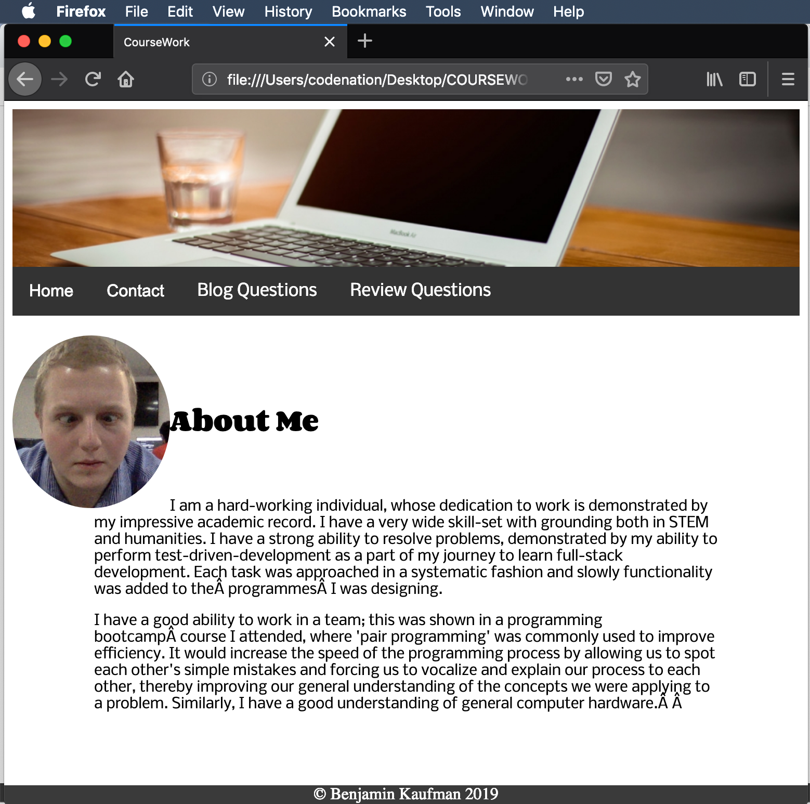
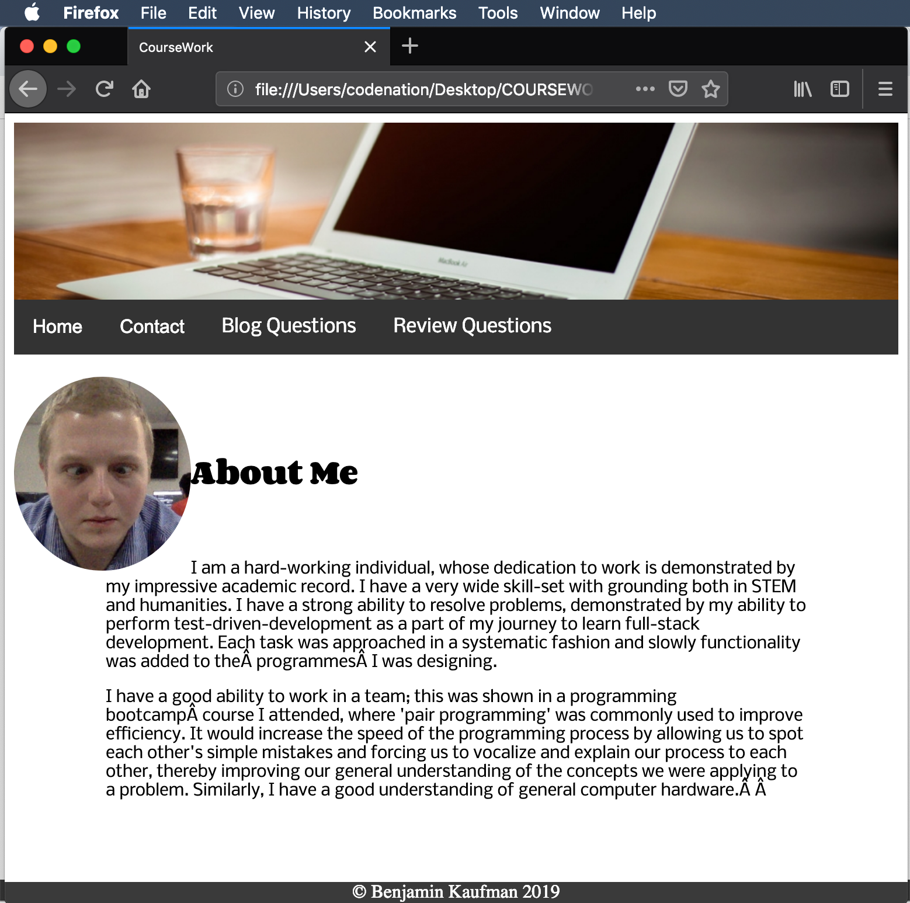

The productivity of work during this project was greatly enhanced by IT tools. The use of integrated development environments (IDE’s), such as VS Code, which autofilled and check syntax while typing up the website reduced the time spent searching for simple syntax errors.
Trello aided in organising and coordinating tasks, helping to keep me productive during the design and implementation of the website. Without Trello, my ability to focus on specific tasks would have been significantly hampered.
Working in a team could have been a way to improve the efficiency of website production, particularly if areas of concern could be delegated. If one person was responsible for CSS, another for HTML, or similar, the rate at which the completed site could be completed would be significantly less.
Website Testing
Testing the final website could be done by giving a quality assurance team access to the site. The QA testing would greatly improve the websites reliability and give me an idea as to where the website could be improved. Similarly, letting my peers view and interact with the site and having them feedback to me would be a great benefit.Likewise, checking the websites functionality on more browsers would greatly improve quality assurance.
 
